IAW: Exercici 1
Introducció a Git i GitHub
Alumne: Ryan Alcañiz
Professor: Juanjo Felis
Curs: 2n ASIX
1. Accés als repositoris remots
La forma d’accedir als repositoris remots de GitHub serà per SSH. Per tant, he de copiar la meua clau pública RSA a GitHub. Procedisc:
Figura 1. Cree una clau SSH.
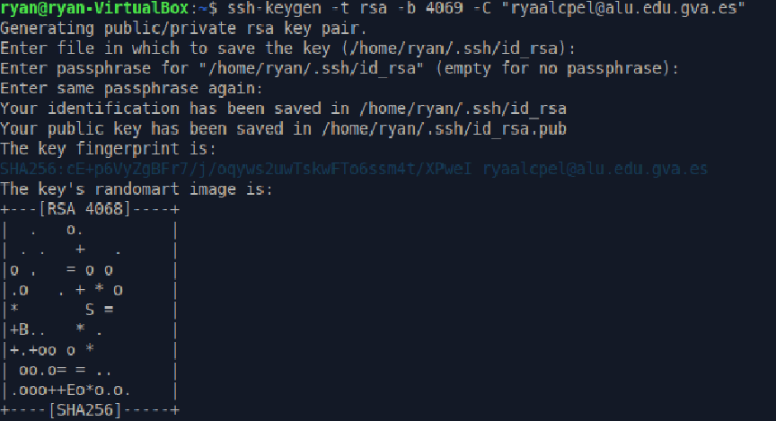
Figura 2. Afegisc la clau al meu GitHub.
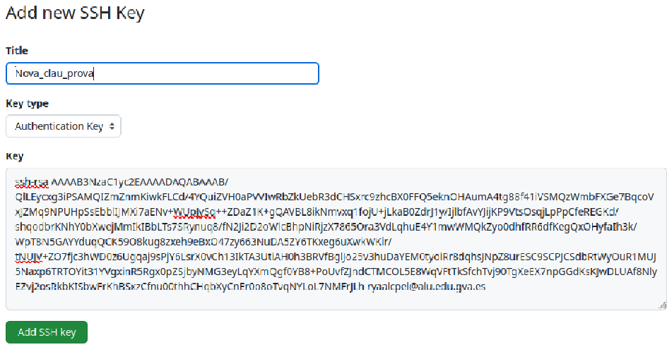
Ara faig el mateix, però fent-ho amb tokens.
Figura 3. Genere un token.
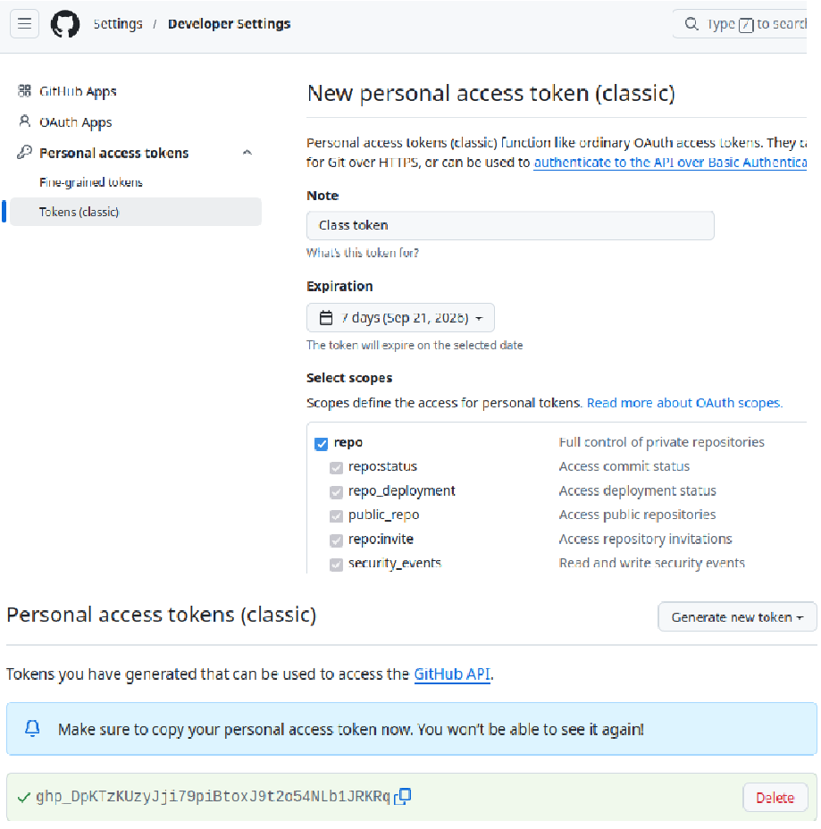
2. Crear un repositori a GitHub
Crea a GitHub un repositori amb el nom prova_el_teu_nom i la descripció «Repositorio de prueba 2ASIX».
Figura 4. Cree el meu repositori a GitHub.
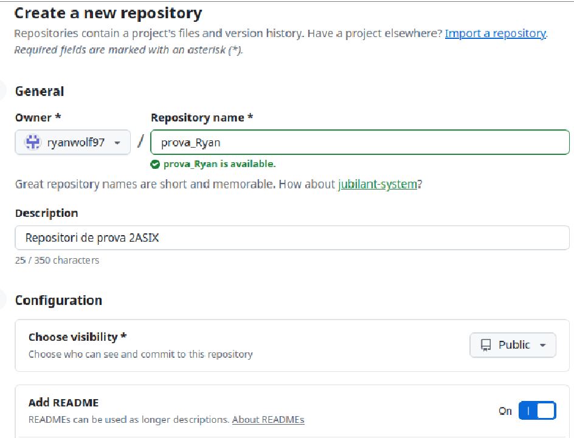
3. Instal·lar Git
Instal·la Git en el teu ordinador.
Figura 5. Instal·lació de Git a la MV Xubuntu.
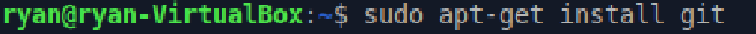
4. Configuració de Git
Figura 6. Establisc el nom d’usuari amb la meua adreça de correu electrònic.
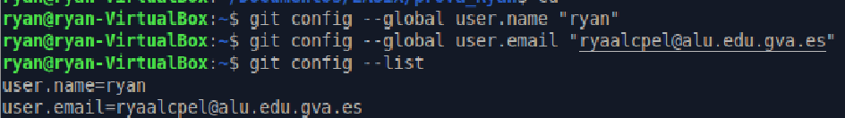
Ara vaig a clonar el repositori remot al meu ordinador.
Figura 7. Clonació del repositori.
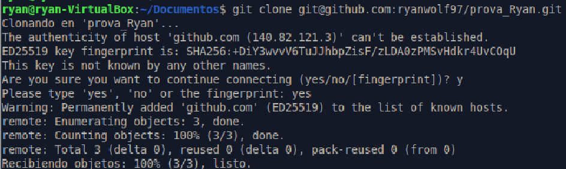
Comprovació que s’ha configurat el repositori utilitzant l’URL SSH.
Figura 8. Comprovació.
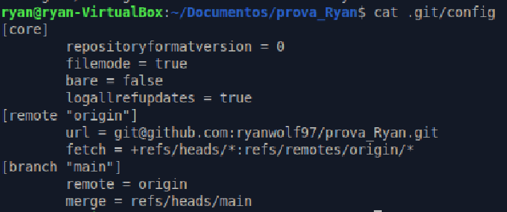
Dins del repositori ha d’estar el fitxer README.md.
Figura 9. Comprovació de l’interior del repositori.
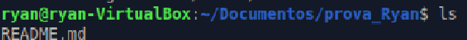
5. Treball amb fitxers i sincronització
Crearem un fitxer nou, l’afegirem al nostre repositori local i després el sincronitzarem amb el nostre repositori remot de GitHub.
Figura 10. Cree el fitxer nou i ho comprove.
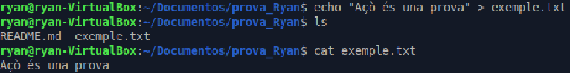
Ara procedisc a pujar-lo a GitHub.
Figura 11. Puge el contingut a GitHub.
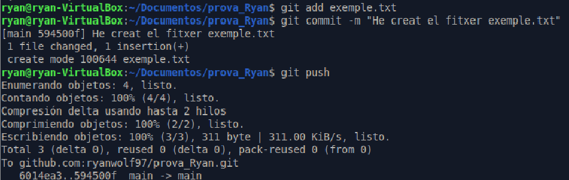
Procedisc a modificar les dades.
Figura 12. Modificació del fitxer.
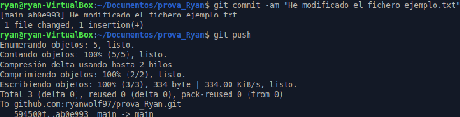
Canvie el nom del fitxer.
Figura 13. Canvi de nom.
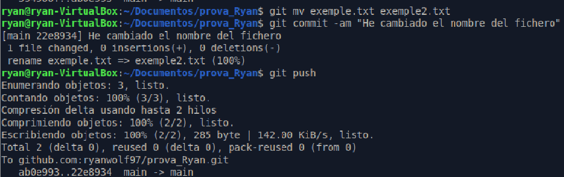
Per esborrar el fitxer del repositori:
Figura 14. Esborre el fitxer del repositori.
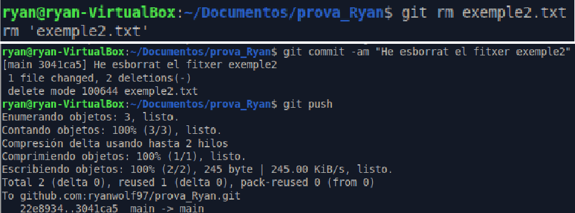
Abans de treballar en un repositori local, has de sincronitzar els possibles canvis que s’hagen produït al repositori remot. Per això:
Figura 15. Baixe les dades de GitHub al meu PC.
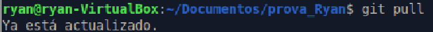
Per comprovar l’estat del meu repositori local:
Figura 16. Comprove l’estat del repositori.
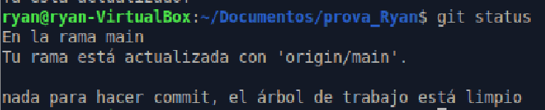
6. Crear un repositori local i sincronitzar-lo amb GitHub
Cree un nou repositori anomenat prova2_el_teu_nom. En aquesta ocasió, crea primer el repositori local i després cerca informació per sincronitzar-lo i crear el repositori remot a GitHub.
Figura 17. Cree el repositori en local.
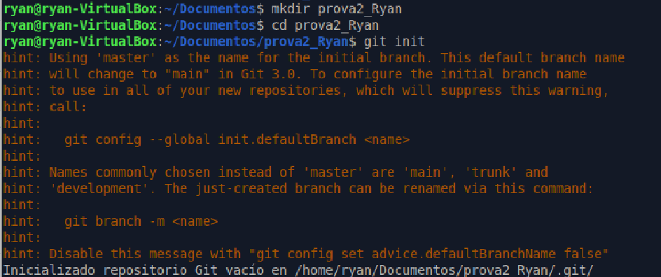
Li afegisc dades dins del repositori.
Figura 18. Genere les dades dins del repositori.
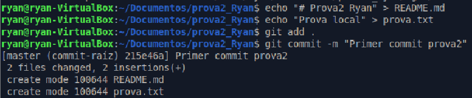
Figura 19. Cree el repositori buit a GitHub.
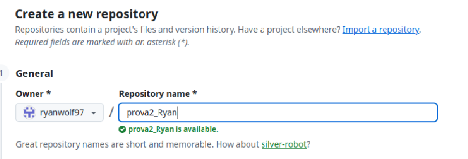
Ara, des de la terminal, utilitzaré les ordres per a pujar el repositori a GitHub.
Figura 20. Puge el repositori a GitHub.
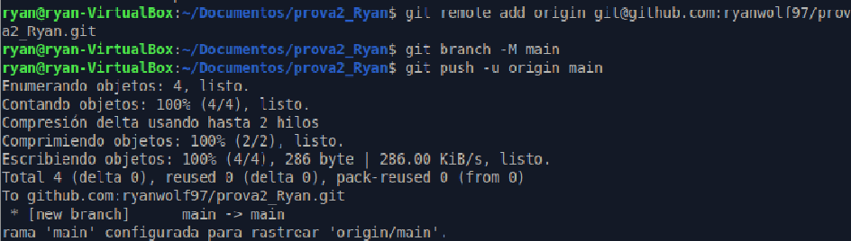
Conclusió
Fent aquest exercici he entés ambdues formes de pujar i baixar un repositori, clonar-lo, modificar-lo i crear des de zero un repositori, fent ús de GitHub i de Git.